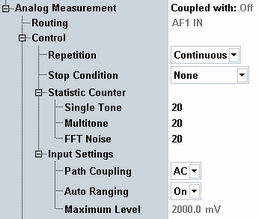

The settings at the top of the "Analog Meas" tab apply to all analog measurements.

Displays the coupling of the measurement to a generator. The measurement can be used standalone ("Off") or it can be coupled to an analog or digital generator.
The coupling is configured within the generator settings, see "Analyzer Coupling".
Remote command:Not applicable
Displays the source of the measured analog audio signal. The source is an audio input connector (AF 1 IN or AF 2 IN).
The source is not configurable. It depends on the measurement instance or on the used subinstrument.
Remote command:Not applicable
Defines how often the measurement is repeated if it is not stopped explicitly or by a failed limit check.
- Continuous: The measurement is continued until it is explicitly terminated. The results are periodically updated.
- Single-Shot: The measurement is stopped after one statistics cycle.
Single-shot is preferable if only a single measurement result is required under fixed conditions, which is typical for remote-controlled measurements. Continuous mode is suitable for monitoring the evolution of the measurement results in time and observe how they depend on the measurement configuration, which is typically done in manual control. The reset/preset values therefore differ from each other.
- "None": The measurement is performed according to its "Repetition" mode and "Statistic Count", irrespective of the limit check results.
- "On Limit Failure": The measurement is stopped when one of the limits is exceeded, irrespective of the repetition mode set. If no limit failure occurs, it is performed according to its "Repetition" mode and "Statistic Count". Use this setting for measurements that are intended for checking limits, e.g. production tests.
Defines the number of measurement intervals per measurement cycle (statistics cycle, single-shot measurement). This value is also relevant for continuous measurements, because the averaging procedures depend on the statistic count.
For audio measurements, a single measurement interval is completed when the R&S CMW has acquired a full set of results. The statistic counts for single tone, multitone and FFT noise measurements can be configured individually.
Remote command:The input settings configure the AF input path.
Configures whether the DC component of the AF signal is blocked or measured.
"AC" | The DC component of the measured AF signal (including a possible DC offset of the input amplifier) is blocked. This mode ensures accurate measurements of the AC component. However, the DC component cannot be measured. |
"DC" | Both the DC component and the AC component of the AF input signal are measured. |
The maximum AF input level expected at the AF connector can be set manually or automatically. Too high input levels result in the error message "Input Overdriven".
- Auto ranging:
If auto ranging is enabled, the maximum expected AF input level is set automatically according to the average level of the measured AF signal plus an appropriate overload margin. - Manual configuration:
If auto ranging is disabled, the manually configured "Maximum Level" is applied.
To optimize the "Maximum Level" setting, start with a low value. Then increase it, until the error message "Input Overdriven" disappears.